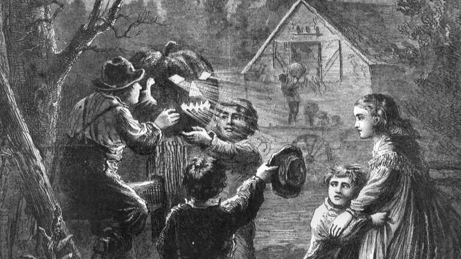
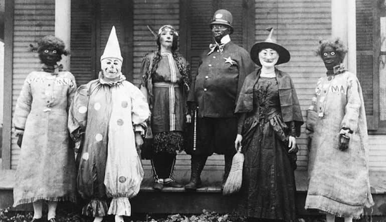
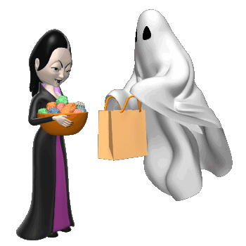
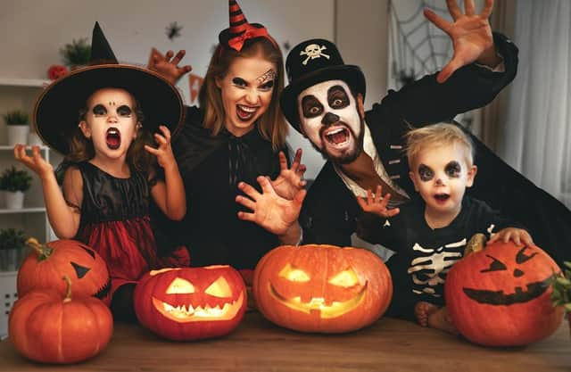
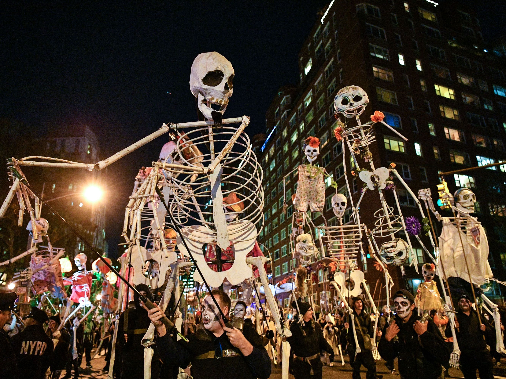
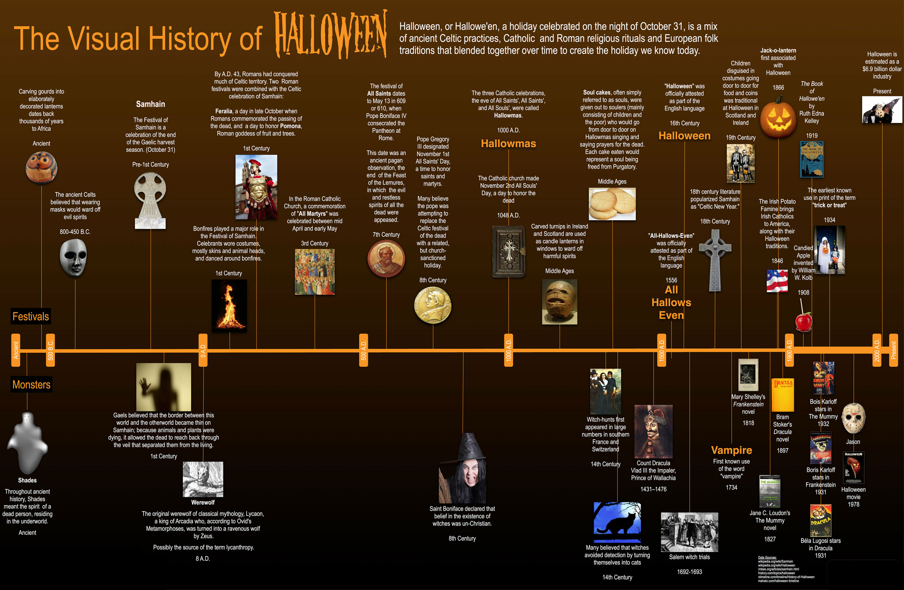

History of Halloween
What is Halloween?
Halloween is a holiday that marks the day before the Western Christian feast of All Saints, or All Hallows, and initiates the season of Allhallowtide. In much of Europe and North America, celebration of Halloween is largely nonreligious.

When is Halloween?
Halloween is celebrated on October 31.

Where did Halloween come from?
Halloween may have developed partially from the pre-Christian holiday Samhain, which was celebrated in early medieval Ireland around November 1 as the beginning of a new year.
However, it seems to have developed mostly from Christian feasts of the dead from later in the Middle Ages, including All Saints' Day on November 1 and All Souls' Day on November 2.
By the 9th century, October 31 was being celebrated as All Hallows' Eve, later contracted to Halloween, throughout Western Christendom.


How is Halloween celebrated?
Halloween is celebrated with pranks, parties, costumes, and trick-or-treating.
People also often carve faces out of pumpkins.

How did Halloween become popular in the United States?
European immigrants to the United States in the 19th century brought Halloween customs with them and helped popularize the holiday.
By the 20th century Halloween had become one of the principal holidays in the United States, especially among children.

Visual History of Halloween
